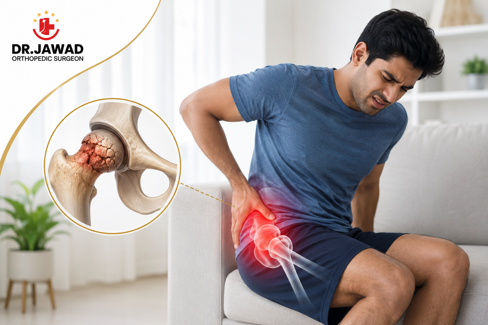

Medically Reviewed by
DR. MIR JAWAD ZAR KHANMBBS, MS - Orthopedic
M.CH-(Ortho) Joint
Replacement surgeon
Young and in Hip Pain? What Avascular Necrosis Is and Why It Is Rising in India
Most people assume hip problems belong to old age, so persistent hip or groin pain in a person in their thirties or forties often gets brushed aside or blamed on a muscle strain. But one serious condition specifically affects younger adults, and doctors in India are seeing more of it: avascular necrosis, often shortened to AVN. It is a condition where part of the hip bone begins to die because its blood supply has been cut off. Caught early, the joint can often be saved. Left too long, it can lead to the hip collapsing and needing replacement. Understanding AVN, and taking early hip pain seriously, genuinely matters.
What Is Avascular Necrosis?
Avascular necrosis means, quite literally, tissue death caused by a loss of blood supply. Bone is living tissue that needs a constant blood supply to stay healthy. When that supply to a section of bone is interrupted, the bone tissue begins to break down and die.
The condition most commonly affects the head of the femur, the ball at the top of the thigh bone that forms part of the hip joint. As the bone weakens, the smooth ball can lose its shape and eventually collapse, damaging the joint and causing pain and stiffness. Because the hip is a weight bearing joint, this has a major impact on walking and daily life.
Why Is AVN Rising Among Younger Indians?
Unlike ordinary wear and tear arthritis, AVN often strikes people in the prime of life. Several recognized risk factors are behind it.
Prolonged steroid use
Long term or high dose use of corticosteroid medication is one of the most common causes of AVN. These medicines are prescribed for a range of conditions, and their extended use is a recognized risk factor for the hip bone losing its blood supply.
Excessive alcohol consumption
Heavy, sustained alcohol use is another well established cause. It can affect blood flow and fat metabolism in ways that compromise the blood supply to bone.
Injury to the hip
A fracture or dislocation of the hip can physically damage the blood vessels that feed the femoral head, triggering AVN months or even years after the original injury.
Other medical conditions
Certain conditions and treatments can raise the risk. In a significant number of cases, however, no single cause is identified, which is why awareness of the symptoms matters so much.
Early Warning Signs You Should Not Ignore
AVN often develops gradually, and in its earliest stage there may be no symptoms at all. As it progresses, the following signs appear and should never be dismissed simply because of a person's age.
- Pain deep in the groin, sometimes spreading to the thigh or buttock
- Pain that is worse when putting weight on the leg and eases with rest, at least early on
- A gradual reduction in the hip's range of movement
- A developing limp or difficulty with activities like climbing stairs
- Pain that, in later stages, continues even at rest and at night
The single most important message about AVN is that time matters. In its early stages, before the bone collapses, there are treatments that can preserve the natural hip joint. Once collapse occurs, options narrow. This is why unexplained, persistent hip or groin pain in a younger adult should be evaluated promptly rather than waited out.
How Avascular Necrosis Is Treated
Treatment depends heavily on how early the condition is caught and how much bone is affected.
Early stage, joint preserving treatment
When AVN is diagnosed before the femoral head collapses, the goal is to save the natural joint. Depending on the case, this may involve measures to reduce load on the hip, medication, and joint preserving surgical procedures designed to relieve pressure and encourage blood supply to return. The earlier this happens, the better the chance of avoiding a replacement.
Advanced stage, hip replacement
If AVN is diagnosed late, once the bone has collapsed and the joint is damaged, total hip replacement is often the most effective way to relieve pain and restore movement. Modern hip replacement has excellent long term results, and for a younger patient the choice of implant and surgical precision are especially important for a long lasting outcome.
When to See a Hip Specialist
Any persistent hip or groin pain that lasts more than a couple of weeks deserves evaluation, and this is especially true for younger adults with known risk factors such as a history of steroid use, heavy alcohol use or a previous hip injury. Diagnosis usually involves a clinical examination and imaging. An MRI is particularly valuable because it can detect AVN in its early stages, often before an X-ray shows any change.
The instinct to assume hip pain is trivial in a young person is exactly what allows AVN to progress unnoticed. Getting it checked early is what makes joint preservation possible.
The Stages of Avascular Necrosis
AVN progresses through stages, and understanding this explains why timing is everything. In the earliest stage, the blood supply is compromised and the bone is affected, but its shape is still intact and there may be no symptoms. This is the ideal point to intervene.
As it advances, the weakened bone of the femoral head begins to flatten and then collapse, losing its round shape. Once the joint surface is damaged and arthritis sets in, the condition has reached its late stage. Treatment options at each stage differ, which is why an early diagnosis, when the joint can still be preserved, makes such a difference to the outcome.
Can Avascular Necrosis Be Prevented?
Not every case of AVN is preventable, since some occur without any identifiable cause. However, understanding the risk factors allows some sensible precautions. Where corticosteroid medication is necessary for another condition, it should be taken at the lowest effective dose and duration under medical supervision, never extended casually.
Limiting alcohol to moderate levels reduces one of the major risk factors. And anyone who has had a hip injury should mention it if hip pain develops later, since AVN can appear months or years after the original trauma. Awareness is the main protective tool, because it leads to earlier evaluation when symptoms do appear.
Living With and Beyond AVN
A diagnosis of avascular necrosis can be worrying, particularly for a younger person who did not expect a serious hip condition. The reassuring reality is that AVN is treatable, and outcomes today are good. Caught early, joint preserving treatments can protect the natural hip. Caught late, modern hip replacement is highly effective and can return a younger patient to an active life.
The key theme throughout is not to ignore hip or groin pain on the assumption that you are too young for a real hip problem. That assumption is exactly what delays diagnosis. Taking early pain seriously, and getting the right imaging, gives you the widest range of options and the best chance of keeping your own joint.
Conclusion
Avascular necrosis is a reminder that serious hip disease is not confined to old age. It affects younger adults, it is being seen more often in India, and its causes include steroid use, heavy alcohol consumption and previous hip injury. Because early AVN can be treated in ways that save the natural joint, recognizing the warning signs and acting on persistent hip or groin pain is genuinely important. Younger patients who take early hip pain seriously give themselves the best possible chance of keeping their own joint.
Persistent hip or groin pain should never be ignored, whatever your age. Dr. Jawad at Germanten Hospitals, Attapur, offers expert diagnosis and treatment for avascular necrosis. Call 9989635555 to book a consultation.


DR. MIR JAWAD ZAR KHAN
MBBS, MS - Orthopedic, M.CH-(Ortho) Joint Replacement Surgeon
As the visionary Chairman and Managing Director of Germanten Hospitals, Hyderabad, Dr. Mir Jawad Zar Khan brings over two decades of surgical leadership to the field. He is dedicated to transforming lives through evidence-based treatments, advanced robotic technology, and a commitment to patient quality of life.